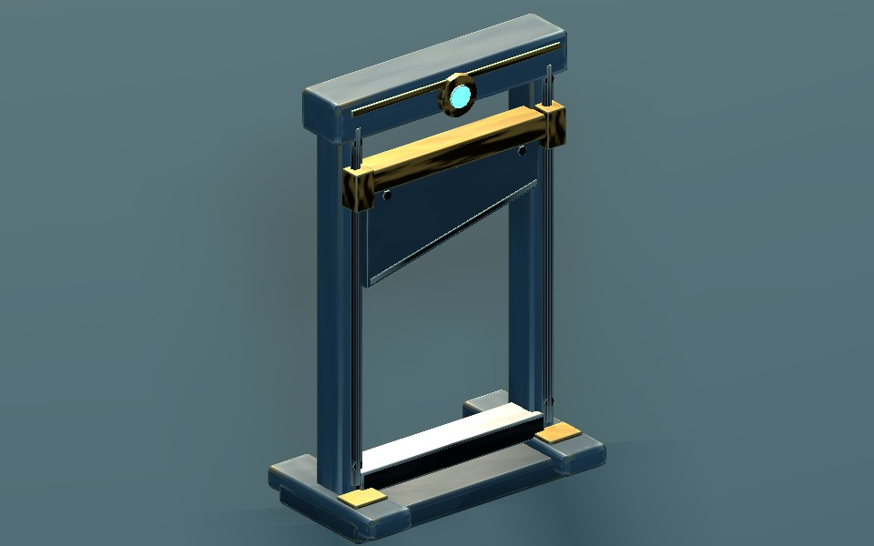
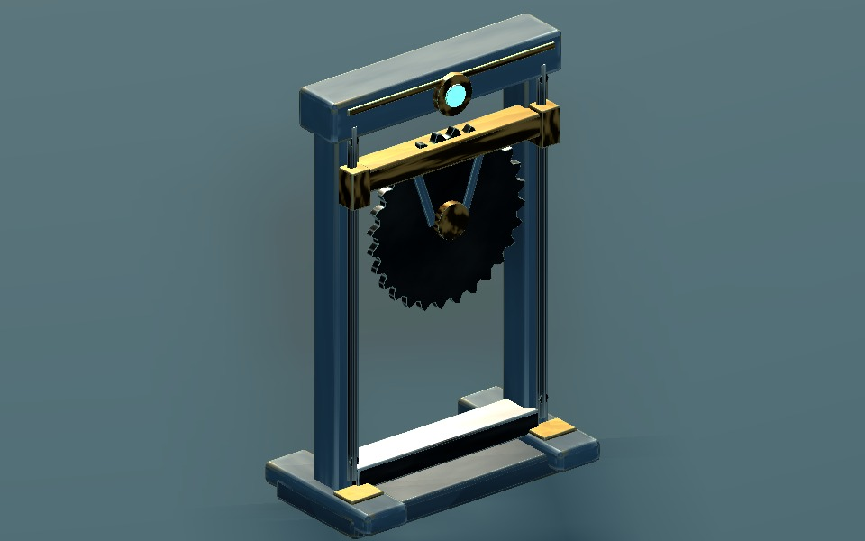
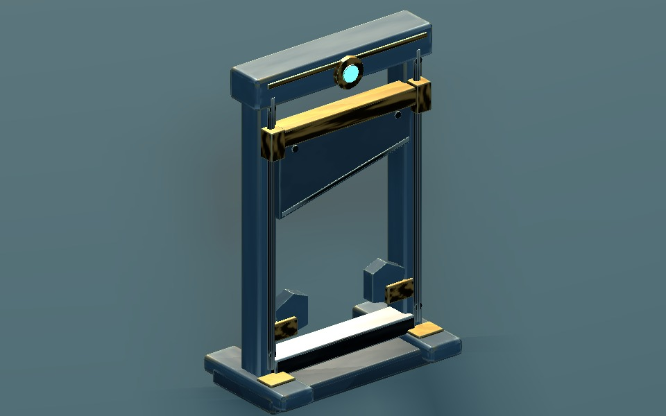
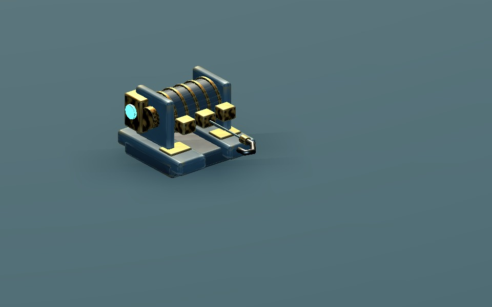
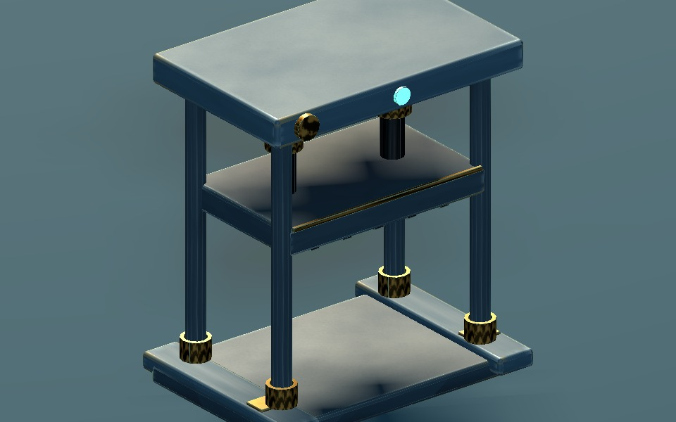
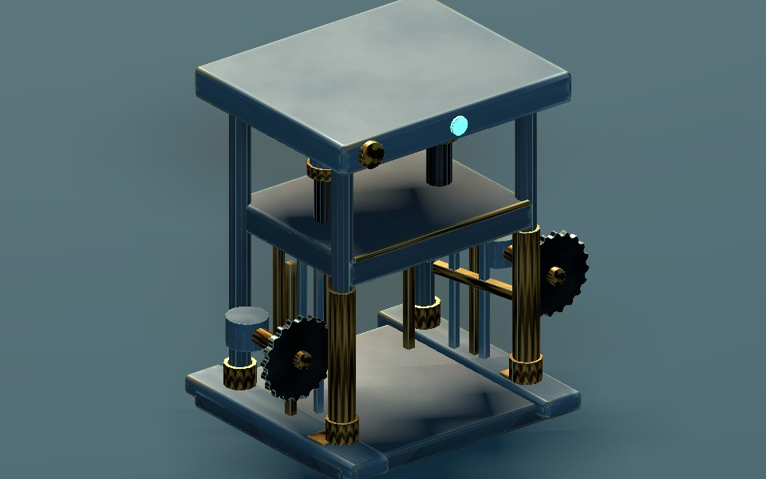
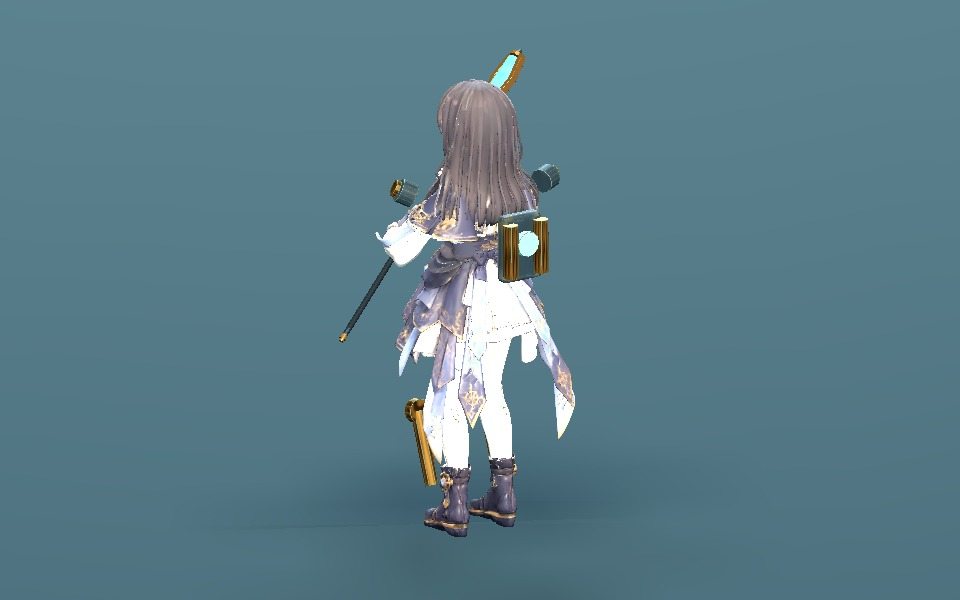
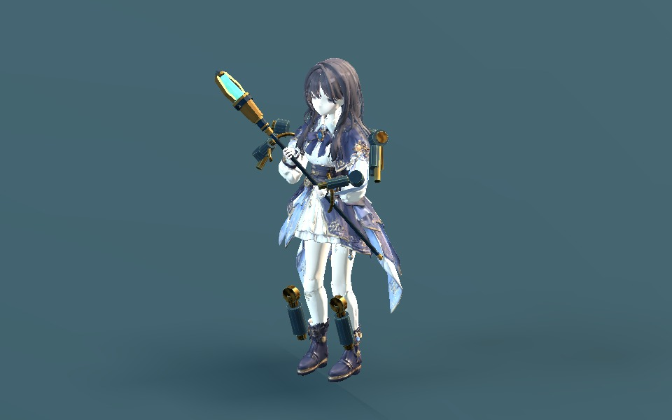
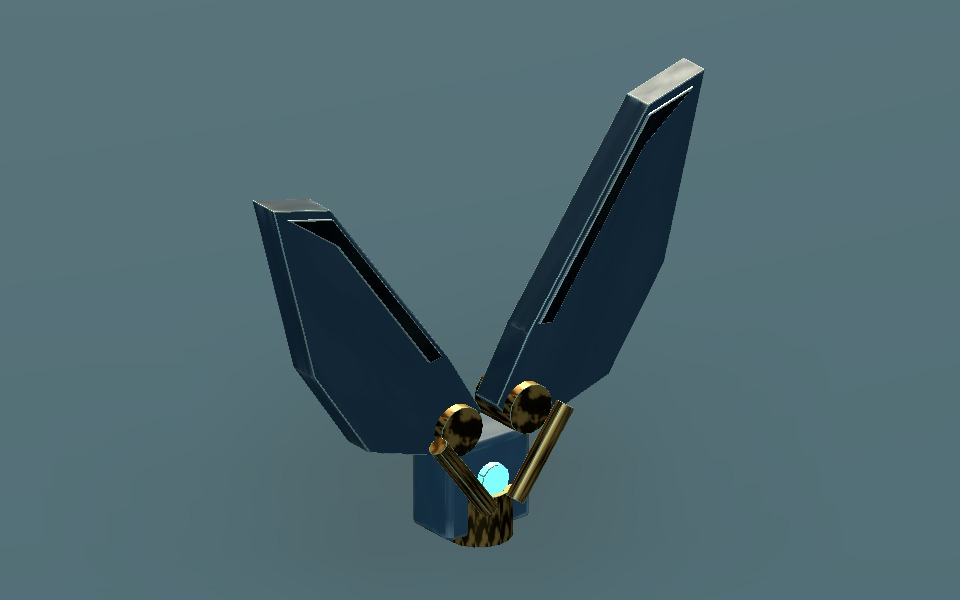

구동 트리 · 준비 모델 v1WITCH / DRIVE TREE / 2026.11.03
구동 장치 9종
남색 강철 · 낡은 황동 · 청록 동력 코어. 조립과 작동을 위한 부품 분할, 회전축, 부착 본을 준비했습니다.
현재 화면은 새 모델의 검토 시안입니다. 신규 스킬의 피해·시전·적 구속 규칙은 아직 게임에 연결하지 않았습니다.
조립과 움직임

장치는 검토용 조립 → 작동 → 소멸 순서입니다. 장착 모션은 현재 캐릭터 클립을 13개 시점으로 나눠 보여 주며 실제 전투 재생 시간과 다를 수 있습니다.
낙하 단두대

가이드레일을 따라 떨어지는 칼날
단두대 · 회전 톱날

천천히 내려오는 회전 톱날
단두대 · 고정

양쪽 고정턱이 닫힌 뒤 칼날 낙하
구속 윈치

단일 갈고리 / 여러 줄 끌기 / 여러 줄 구속
유압 압착기

넓은 압착판과 2단 피스톤
복합 집행기

문 닫기 → 압착 → 양쪽 회전 톱팔
충격 흡수 프레임

등·어깨·정강이에 붙는 가벼운 완충 장치
외골격

등·팔·정강이 보조 프레임, 손·허벅지는 비움
광역 볼트커터

별도 대형 날과 강체 링크, 벌어짐 → 빠른 닫힘
외골격의 의상 간섭 검사
두 의상 × 8개 모션 × 13개 시점, 총 208개 실제 엔진 포즈를 사용했습니다. 엄격한 삼각형 교차가 있는 자세는 26개입니다. 대기·달리기·경직은 검사한 시점에서 통과했고, 찌르기 등 팔을 몸 앞으로 모으는 자세에는 소매 관통이 남아 있습니다. 해당 모션을 선택하면 문제 시점이 표시됩니다.
| 의상 | 모션 | 관통 자세 / 검사 수 |
|---|
| 평상복 | 대기 | 0 / 13 |
| 평상복 | 달리기 | 0 / 13 |
| 평상복 | 휘두르기 | 2 / 13 |
| 평상복 | 찌르기 | 9 / 13 |
| 평상복 | 캐스팅 | 1 / 13 |
| 평상복 | 경직 | 0 / 13 |
| 평상복 | 스프링 점프 | 0 / 13 |
| 평상복 | 쓰러짐 | 0 / 13 |
| 변신복 | 대기 | 0 / 13 |
| 변신복 | 달리기 | 0 / 13 |
| 변신복 | 휘두르기 | 2 / 13 |
| 변신복 | 찌르기 | 9 / 13 |
| 변신복 | 캐스팅 | 1 / 13 |
| 변신복 | 경직 | 0 / 13 |
| 변신복 | 스프링 점프 | 1 / 13 |
| 변신복 | 쓰러짐 | 1 / 13 |
이 검사는 옷과 외골격 사이의 표면 교차입니다. 머리카락·맨몸·임의 포즈·연속 충돌 검사는 포함하지 않습니다. 충격 흡수 프레임은 외골격의 등·어깨·정강이 부품만 사용하는 별도 시안입니다.
크기·재질·검증 범위
장치 옆 캐릭터는 현재 1.5m 게임 캐릭터입니다. ‘실제 표시 크기’는 선택한 1.75× 카메라와 1280×800 캡처를 사용하며 사진을 클릭하면 원본 크기로 확인할 수 있습니다.
총 244개 강체 부품 / 50,204개 삼각형. 공통 색 1K·노멀 1K·ORM 512·발광 256. 저장 Blender와 GLB 재반입의 형상 QA 및 39,796개 런타임 검사를 통과했습니다. 1,516장 GPU 캡처를 생성했습니다. 반복 트림 UV·평면 캡·숨은 접합면·GLB 경계 중복 정점은 기록된 허용 사항입니다.
작동 시각은 검토용 값입니다. 장치와 적의 접촉, 케이블 충돌, 지형/벽 배치, 최종 성능과 전투 밸런스는 이번 검토 대상에 포함되지 않습니다.